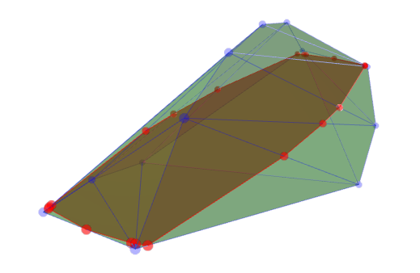

We discuss the relation of hyperplane intersections of convex polytopes to face lattice homomorphisms.
A convex (euclidean) polytope can be defined as the set of points in \(\mathbb R ^n\) which satisfy a set of linear inequalities \[Ax \leq b, \quad A \in \mathbb R ^{m \times n}.\] This is the intersection of the half-spaces given by \[a_{i1} x_1 + \ldots + a_{in} x_n \leq b_i, \quad i = 1, \ldots, m.\] Losely speaking, it is a convex set with flat sides.
A face of a convex polytope \(P\) is the intersection of \(P\) with a hyperplane \(H\), such that the whole hyperplane is contained in a closed halfspace defined by \(H\). Intersections of polytope with affine subspaces are again polytopes, so faces of \(P\) are polytopes themselves.
An abstract polytope is a partially orderes set (poset) which captures the face incidences of a geometric polytope. Check out the linked wikipedia article for details.
Consider the set of all faces of a convex polytope \(P\) ordered by set inclusion. This gives a poset called the face lattice of \(P\), which we denote by \(\mathcal F (P)\). It is a natural way to attach an abstract polytope to any convex polytope. We call two convex polytopes \(P, Q\) combinatorially equivalent if their face lattices are isomorphic as posets and write \(P \simeq Q\).
Conversely, given an abstract polytope \(A\), we call a convex polytope \(Q\) a geometric realization of \(A\) if \(\mathcal F (Q) \simeq A\).
Now consider a convex polytope \(P\) and a hyperplane \(H\), which ideally intersects \(P\) non-trivially, and let further \(S = P \cap H\). This hyperplane intersection yields a natural poset homomorphism \[\iota: \mathcal F (S) \hookrightarrow \mathcal F (P).\] Iterating this for more hyperplanes, we see that any intersection of an affine linear subspace \(H\) with \(P\) yields an embedding of posets \(\mathcal F (P \cap H) \hookrightarrow \mathcal F (P).\)
Does the converse hold? That is, given an embedding of an abstract polytope \(A\) into the face lattice of some convex polytope \(P\), is there a polytope \(Q\) which is combinatorially equivalent to \(P\) (or equivalently \(Q\) is a geometric realization of \(\mathcal F (P))\), such that there exists an affine subspace \(H\) with \[A \simeq Q \cap H?\]
Note that given a convex polytope \(P\) and an embedding of some abstract polytope \(A\) into its face lattice, we cannot hope for there to be a hyperplane such that its intersection with \(P\) yields \(A\). As an example, consider the regular octahedron. In its face lattice, we can find a sublattice that is an abstract octagon, but there is no hyperplane which intersects all eight faces of the regular octahedron. So, this slice does not exist, and we have to look for the octagon in other embeddings of the abstract octahedron. Luckily, slightly wiggling the vertices of the octahedron, we can quickly find our desired octagon as a hyperplane section.
Now consider the regular icosahedron. It is apparent that there is no hyperplane which slices through all twenty of its faces, however we can find the abstract 20-gon in the face lattice of the icosahedron. So is there a geometric realization of the abstract icosahedron such that we can slice through all 20 facets with a single hyperplane, resulting in the 20-gon? Perhaps surprisingly, yes! Consider the following image of one possible realization:
